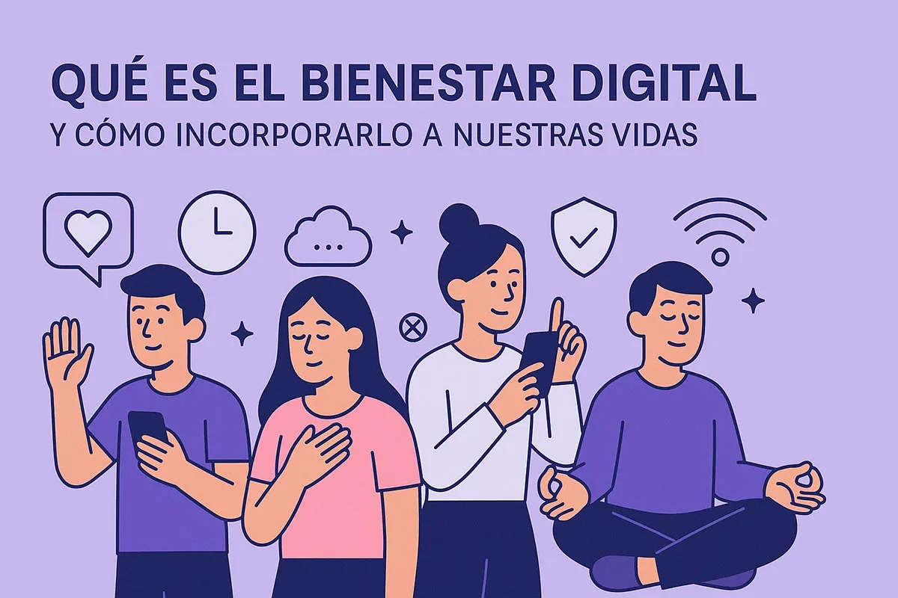
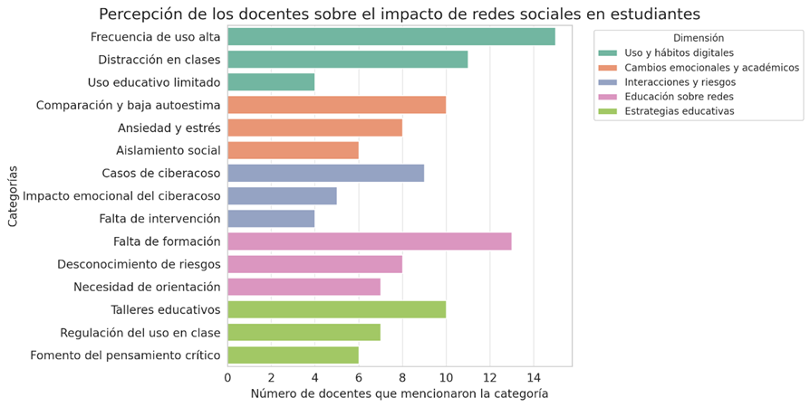
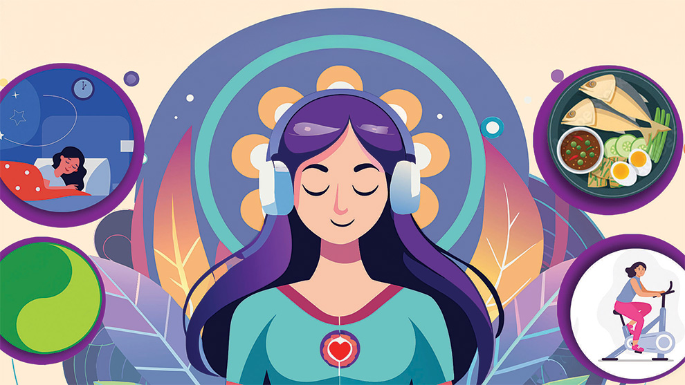
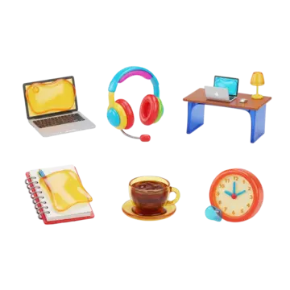

What is digital wellbeing?
Digital wellbeing considers an individual's overall health, encompassing both physical and mental well-being, in relation to their connection with technology and digital devices, given the significant amount of time we spend with them. The ultimate goal is to find an appropriate balance between technology use and daily life, thereby avoiding the negative consequences of excessive or improper use of electronic devices, social media, and other digital technologies.
Impact of technology on mental and emotional health
This impact is very important because, as time goes on, we see how advancements proliferate and conveniences multiply. Even so, new challenges to mental health emerge. We are confronted with technology, social changes in interaction, cyberbullying, and the effects these have on our mental and emotional well-being.
Protect your emotional health
Protecting our mental and emotional health requires understanding that technology is a formidable force, with effects shaped by our interaction with it. Navigating it carefully means avoiding excess, because, be aware, anyone can comment from fake profiles, and some comments can hurt someone! The decision to use the internet to build, rather than destroy, is the beginning of your well-being.
Technology is intertwined with our lives; however, true peace of mind comes from mastering its wise use. Never let external opinions determine your worth; control over your emotions must inevitably remain outside your digital sphere.
Wellbeing in the Digital Age
*Responsible Use: Unfortunately, technology is sometimes misused; it's important to avoid distractions and maximize its potential. You should manage your time, use tools and applications for studying, and don't forget to protect your personal data!.
*Emotional Shield: The ability to create personal barriers to cope with difficult moments, avoiding emotional lows! Often, these defenses are forged from past experiences, affecting how we relate to the world. Don't let other people's comments steal your inner peace; that's the real key!.
*You decide what to absorb and what to pay attention to; that's what matters! Keep track of what you keep and what you let go of, so that nothing affects you too much!.

Source: https://i0.wp.com/www.tepongounreto.org/wp-content/uploads/2025/07/bienestar-digital.jpg

Source: https://ve.scielo.org/img/revistas/prcsh/v7n2/2665-0169-prcsh-7-02-198-gf3.png

Source: https://img.freepik.com/vector-gratis/detener-concepto-bullying.jpg
Digital Wellbeing Video
Source: NLB Singapore. (2025, 11 enero). Digital Wellbeing | Explained in 3 Minutes [Vídeo]. YouTube. https://www.youtube.com/watch?v=RHUbOjmO7nw
Healthy Habits
Balance Between Life and Screens
Maintaining a healthy relationship with technology requires creating protected spaces where digital devices do not dominate our daily lives.
1. Real Connection Spaces (Without Screens)
Family time is important. Creating moments without phones helps strengthen emotional connections and encourages real interaction.
- Device-free meals allow people to talk and enjoy time together.
- Going for a walk or exercising improves physical and mental wellbeing.
- Create device-free areas at home, such as bedrooms or the dining room.
2. Conscious and Responsible Use
Technology should be a helpful tool rather than a constant distraction.
After spending long periods looking at screens, it is recommended to take a break and do physical activities or spend time outdoors.
Before unlocking your phone, ask yourself what you are going to use it for. This simple question can help prevent unnecessary screen time.
3. The Value of Outdoor Activities
Spending time outside helps reduce stress, improves mood and decreases eye strain caused by excessive digital exposure.
Responsible Use of Mobile Phones and Computers
Using technology responsibly means setting clear limits so that devices do not interfere with our physical health, emotional wellbeing or relationships.
It is also important to protect personal information, use strong passwords, and communicate respectfully online.
Active Breaks
Taking short breaks from technology, such as stretching, walking or spending time with friends, can help improve concentration and reduce digital fatigue.
Screen Time Control
Setting specific schedules for device use helps restore balance in daily life and improves the quality of rest and sleep.
Digital Balance
Digital wellbeing is about finding a balance between technology and real life. When used consciously, technology can support learning, communication and personal growth without replacing meaningful real-world experiences.

Source: https://img.freepik.com/vector-gratis/detener-concepto-bullying_23-2148593168.jpg?semt=ais_hybrid&w=740&q=80
Source: https://www.gaceta.unam.mx/wp-content/uploads/2025/02/250224-aca4-des-f1-los-habitos-sanos-generan-una-mejor-salud-mental.jpg
Organization of study time
Collaborative tools, such as shared calendars and task managers like Trello or Notion, along with distraction-free apps, are useful for orchestrating obligations clearly and visually, organizing our daily habits. By consolidating data and assigning activities, we gain precious time for our minds. This makes it easier to focus our efforts on what's essential, allowing us to achieve daily goals efficiently and enjoy true leisure without the burden of pending tasks.
Example of Time Organization
| Study Time | Rest | Recommendation |
|---|---|---|
| 25 minutes | 5 minutes | Basic Technique |
| 50 minutes | 10 minutes | Ideal for complex subjects |
| 2 hours | 20-30 minutes | Divide into 2 blocks |
Break Calculator
Digital tools for productivity
Tools like shared calendars, task managers such as Trello or Notion, and distraction-blocking apps make it easy to organize responsibilities clearly and visually. By centralizing data and automating monotonous tasks, we free up resources, allowing us to focus on what's vital: the effective achievement of daily goals and genuine leisure time without the burden of unresolved issues.

Helpful Tips for Better Digital Wellbeing
Below you will find some simple suggestions that can help you maintain a healthier relationship with technology in your daily life. Click on each card to discover a tip.